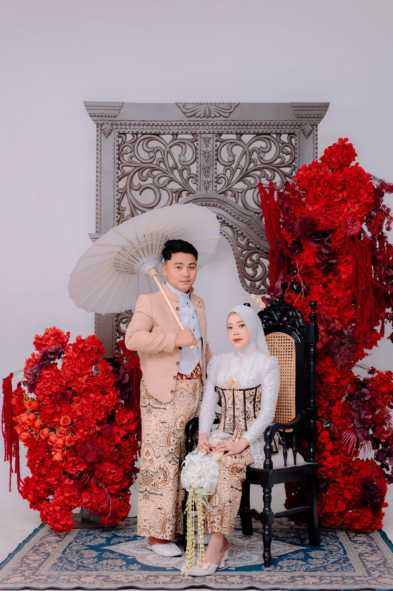
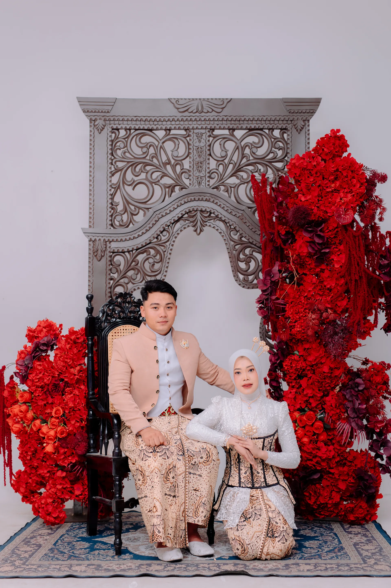
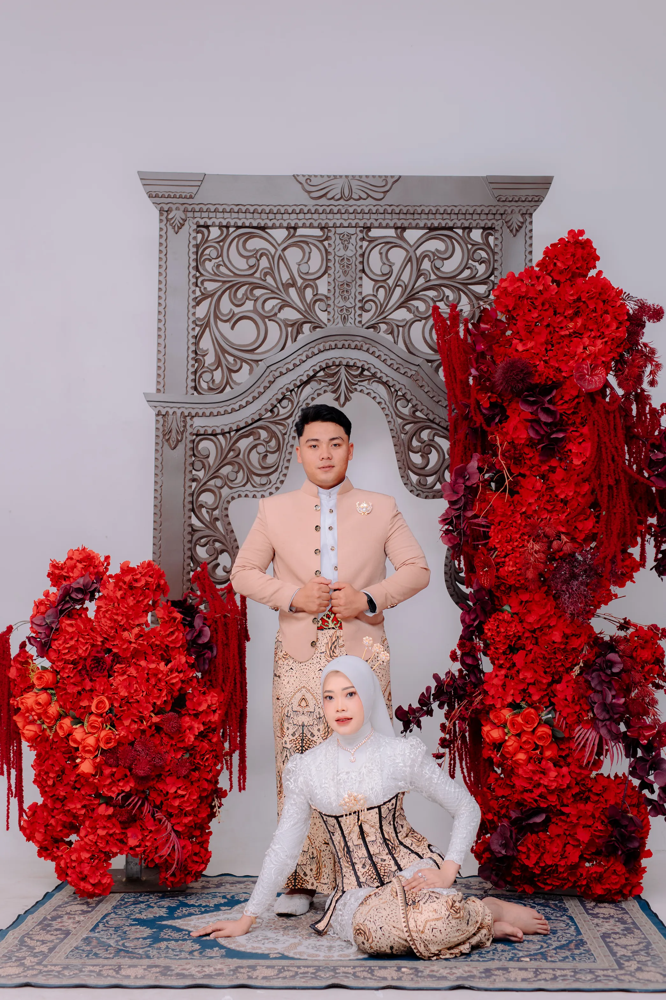

The Wedding Of
Undangan Pernikahan
Dengan memohon rahmat dan ridho Allah SWT, kami mengundang Bapak/Ibu/Saudara/i untuk menghadiri pernikahan kami.
Dan di antara tanda-tanda (kebesaran)-Nya ialah Dia menciptakan pasangan-pasangan untukmu dari jenismu sendiri, agar kamu cenderung dan merasa tenteram kepadanya, dan Dia menjadikan di antaramu rasa kasih dan sayang. Sungguh, pada yang demikian itu benar-benar terdapat tanda-tanda (kebesaran Allah) bagi kaum yang berpikir.
QS. Ar-Rum: 21Maha Suci Allah SWT yang telah menciptakan makhluk-Nya berpasang-pasangan. Ya Allah, semoga ridho-Mu tercurah mengiringi pernikahan kami:
Putri dari Bapak Agus Supriyanto & Ibu Siti Zaenap
Putra dari Bapak M. Fathurrohman & Ibu Istiqomah
Save The Date
Sabtu, 14 November 2026
Rumah Mempelai Pria
Desa Batu RT 01/RW 01 Kec. Karangtengah Kab. Demak
Hiburan/Acara:
• Siang: Qosidah
• Malam: Pengajian oleh Kyai Angling Dharmo/Gus Hafidz dari Pringapus, Kab. Semarang
Senin, 16 November 2026
Rumah Mempelai Wanita
Desa Dukun RT 01/RW 02 Kec. Karangtengah Kab. Demak
Hitung Mundur
Hari
Jam
Menit
Detik
Our Moments
Momen kebersamaan kami



RSVP
Silakan berikan doa restu dan konfirmasi kehadiran Anda
Merupakan suatu kehormatan dan kebahagiaan bagi kami apabila Bapak/Ibu/Saudara/i berkenan hadir dan memberikan doa restu kepada kami.
Atas kehadiran dan doa restunya, kami ucapkan terima kasih.
Kami yang berbahagia,
Beserta keluarga besar